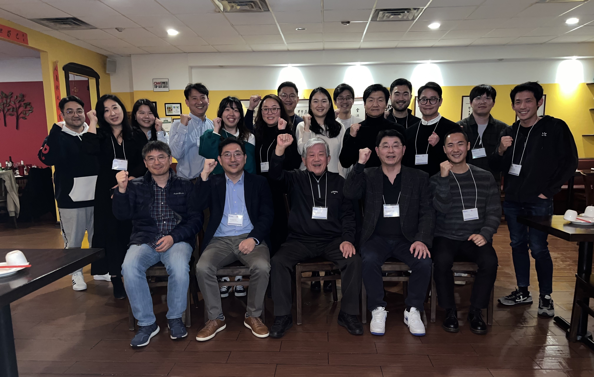

Events
Stay tuned for upcoming events. Here's a look at one of our recent gatherings.
KSEA Philadelphia Chapter Fall Membership Drive & UPenn KoGSA New Student Welcome
Date: Fall 2025
Location: University of Pennsylvania
KSEA Philadelphia Chapter joined the UPenn KoGSA New Student Welcome event to introduce KSEA to new graduate students and encourage membership. This event served as a membership drive to connect with the next generation of scientists and engineers.
PKSA & KKYU Joint Seminar Series
Date: 2025
Location: Philadelphia, PA
A joint seminar series organized in collaboration with PKSA (Philadelphia Korean Scholars Association) and KKYU. This series featured research presentations and discussions to foster academic exchange among members.
34th Northeast Regional Conference (NRC)
Date: April 26, 2025
Location: DoubleTree Hotel, Fort Lee, NJ
Theme: "Innovating the Future: AI, Healthcare, and Digital Transformation"
The NRC 2025 provided a vibrant forum for knowledge sharing, collaboration, and innovation, encouraging interdisciplinary dialogue among leaders from academia, industry, and government. The event featured keynote addresses by distinguished speakers, technical sessions, panel discussions, and networking opportunities, promoting research and professional advancement between the USA and Korea.
Group photo of the 34th Northeast Regional Conference (NRC) on April 26, 2025.
33rd Northeast Regional Conference (NRC)
Date: April 13, 2024
Location: Montclair State University, NJ
Theme: "Toward a Resilient Future: Uniting Science, Technology, and Sustainability"
The 33rd Northeast Regional Conference (NRC) 2024 was jointly organized by the New Jersey, New York Metropolitan, and Philadelphia Chapters of KSEA. The conference focused on harmonizing scientific advancement, technological prowess, and sustainable practices. It was held in collaboration with local societies and KSEA-affiliated professional societies (APSs), including KASBP, KITEE, KWiSE, NYKB, and PKSA.
Group photo of the 33th Northeast Regional Conference (NRC) on April 13, 2024.
32nd Northeast Regional Conference (NRC)
Date: April 29, 2023
Location: Montclair State University, NJ
Theme: "Rebuilding with Resilience"
The 32nd NRC was jointly hosted by the KSEA New York Metropolitan, New Jersey, and Philadelphia chapters. The conference focused on promoting the spirit of service in pursuing technical excellence by exemplifying those who have led such a life of service. The theme championed the future of Biotech & Healthcare, D.N.A (Data, Network, and A.I.), Smart Science & Engineering, Entrepreneurship, and Young Generation.
The event featured plenary speakers Dr. Chang-Yong Nam (Brookhaven National Laboratory) and Dr. Young-Kee Kim (The University of Chicago), who shared insights on semiconductor devices and fundamental laws of nature, respectively. The conference was highly successful with 119 attendees, fostering networking and career opportunities.
Figure 4. NRC 2023 Group Photo
KSEA Philadelphia and New Jersey – KITEE Networking Event
Date: February 22, 2023
Location: Han Dynasty, Cherry Hill, NJ
KSEA Philadelphia Chapter, New Jersey Chapter, and KITEE (Korean-American Innovative Technology Engineers and Entrepreneurs), an APS of KSEA, jointly held a networking event. The event aimed to promote networking and collaboration among KSEA and KITEE members in the Philadelphia and South/Central NJ area, and to recruit new members and bring out inactive members to connect with KSEA again.
A group photo of the KSEA-KITEE Networking Dinner on February 22, 2023.